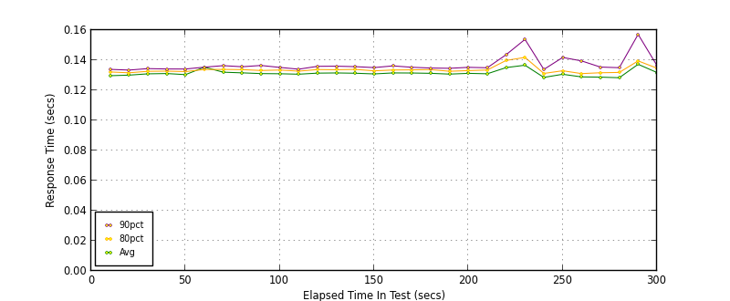
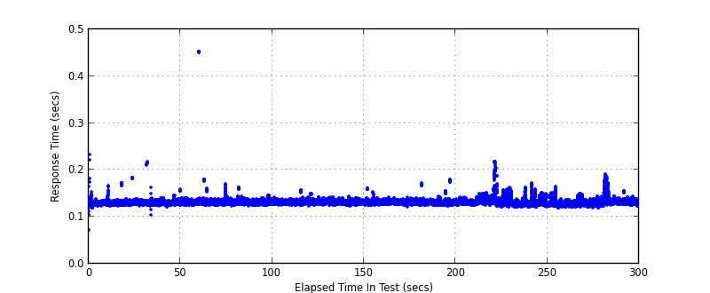
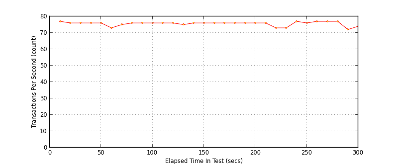

Performance Results Report
Summary
transactions: 22824
errors: 0
run time: 300 secs
rampup: 0 secs
test start: 2015-02-18 16:12:46
test finish: 2015-02-18 16:17:46
time-series interval: 10 secs
workload configuration:
| group name | threads | script name |
|---|
| user_group-1 | 10 | v_user.py |
All Transactions
Transaction Response Summary (secs)
| count | min | avg | 80pct | 90pct | 95pct | max | stdev |
|---|
| 22824 | 0.072 | 0.131 | 0.134 | 0.136 | 0.140 | 0.453 | 0.009 |
Interval Details (secs)
| interval | count | rate | min | avg | 80pct | 90pct | 95pct | max | stdev |
|---|
| 1 | 772 | 77.20 | 0.072 | 0.130 | 0.132 | 0.134 | 0.136 | 0.233 | 0.007 |
| 2 | 769 | 76.90 | 0.123 | 0.130 | 0.132 | 0.133 | 0.135 | 0.172 | 0.006 |
| 3 | 763 | 76.30 | 0.124 | 0.131 | 0.133 | 0.134 | 0.136 | 0.184 | 0.007 |
| 4 | 762 | 76.20 | 0.104 | 0.131 | 0.133 | 0.134 | 0.136 | 0.217 | 0.010 |
| 5 | 767 | 76.70 | 0.122 | 0.130 | 0.132 | 0.134 | 0.136 | 0.159 | 0.004 |
| 6 | 738 | 73.80 | 0.125 | 0.135 | 0.134 | 0.135 | 0.138 | 0.453 | 0.037 |
| 7 | 757 | 75.70 | 0.125 | 0.132 | 0.134 | 0.136 | 0.138 | 0.180 | 0.007 |
| 8 | 760 | 76.00 | 0.124 | 0.132 | 0.134 | 0.136 | 0.138 | 0.170 | 0.005 |
| 9 | 762 | 76.20 | 0.123 | 0.131 | 0.133 | 0.137 | 0.139 | 0.163 | 0.005 |
| 10 | 763 | 76.30 | 0.125 | 0.131 | 0.133 | 0.135 | 0.137 | 0.146 | 0.003 |
| 11 | 765 | 76.50 | 0.125 | 0.131 | 0.133 | 0.134 | 0.136 | 0.141 | 0.003 |
| 12 | 761 | 76.10 | 0.124 | 0.131 | 0.134 | 0.136 | 0.138 | 0.157 | 0.004 |
| 13 | 759 | 75.90 | 0.124 | 0.132 | 0.134 | 0.136 | 0.138 | 0.150 | 0.004 |
| 14 | 762 | 76.20 | 0.125 | 0.131 | 0.134 | 0.136 | 0.138 | 0.143 | 0.003 |
| 15 | 763 | 76.30 | 0.124 | 0.131 | 0.133 | 0.135 | 0.137 | 0.143 | 0.003 |
| 16 | 760 | 76.00 | 0.124 | 0.132 | 0.133 | 0.136 | 0.139 | 0.161 | 0.005 |
| 17 | 760 | 76.00 | 0.126 | 0.131 | 0.134 | 0.135 | 0.137 | 0.142 | 0.003 |
| 18 | 762 | 76.20 | 0.121 | 0.131 | 0.134 | 0.135 | 0.136 | 0.143 | 0.003 |
| 19 | 764 | 76.40 | 0.124 | 0.131 | 0.133 | 0.135 | 0.136 | 0.172 | 0.005 |
| 20 | 761 | 76.10 | 0.124 | 0.131 | 0.133 | 0.135 | 0.138 | 0.180 | 0.007 |
| 21 | 764 | 76.40 | 0.125 | 0.131 | 0.133 | 0.135 | 0.137 | 0.141 | 0.003 |
| 22 | 739 | 73.90 | 0.125 | 0.135 | 0.140 | 0.144 | 0.146 | 0.152 | 0.006 |
| 23 | 732 | 73.20 | 0.121 | 0.137 | 0.142 | 0.154 | 0.162 | 0.218 | 0.016 |
| 24 | 778 | 77.80 | 0.120 | 0.129 | 0.131 | 0.134 | 0.139 | 0.163 | 0.006 |
| 25 | 765 | 76.50 | 0.120 | 0.131 | 0.133 | 0.142 | 0.148 | 0.172 | 0.008 |
| 26 | 775 | 77.50 | 0.119 | 0.129 | 0.131 | 0.140 | 0.148 | 0.164 | 0.007 |
| 27 | 777 | 77.70 | 0.121 | 0.129 | 0.132 | 0.135 | 0.140 | 0.150 | 0.005 |
| 28 | 779 | 77.90 | 0.120 | 0.128 | 0.132 | 0.135 | 0.138 | 0.144 | 0.005 |
| 29 | 727 | 72.70 | 0.123 | 0.137 | 0.140 | 0.157 | 0.168 | 0.191 | 0.013 |
| 30 | 747 | 74.70 | 0.124 | 0.132 | 0.135 | 0.136 | 0.138 | 0.155 | 0.004 |
Graphs
Response Time: 10 sec time-series

Response Time: raw data (all points)

Throughput: 5 sec time-series

Custom Timer: Write Request
Timer Summary (secs)
| count | min | avg | 80pct | 90pct | 95pct | max | stdev |
|---|
| 22813 | 0.050 | 0.109 | 0.112 | 0.114 | 0.118 | 0.431 | 0.009 |
Interval Details (secs)
| interval | count | rate | min | avg | 80pct | 90pct | 95pct | max | stdev |
|---|
| 1 | 772 | 77.20 | 0.050 | 0.108 | 0.110 | 0.112 | 0.114 | 0.211 | 0.007 |
| 2 | 769 | 76.90 | 0.101 | 0.108 | 0.110 | 0.111 | 0.113 | 0.150 | 0.006 |
| 3 | 763 | 76.30 | 0.102 | 0.109 | 0.111 | 0.112 | 0.114 | 0.162 | 0.007 |
| 4 | 762 | 76.20 | 0.082 | 0.109 | 0.111 | 0.112 | 0.114 | 0.195 | 0.010 |
| 5 | 767 | 76.70 | 0.100 | 0.108 | 0.110 | 0.112 | 0.113 | 0.137 | 0.004 |
| 6 | 738 | 73.80 | 0.103 | 0.113 | 0.112 | 0.113 | 0.116 | 0.431 | 0.037 |
| 7 | 757 | 75.70 | 0.103 | 0.110 | 0.112 | 0.114 | 0.116 | 0.158 | 0.007 |
| 8 | 760 | 76.00 | 0.102 | 0.110 | 0.112 | 0.114 | 0.116 | 0.148 | 0.005 |
| 9 | 762 | 76.20 | 0.101 | 0.109 | 0.111 | 0.114 | 0.117 | 0.141 | 0.005 |
| 10 | 763 | 76.30 | 0.103 | 0.109 | 0.111 | 0.113 | 0.115 | 0.124 | 0.003 |
| 11 | 765 | 76.50 | 0.103 | 0.109 | 0.111 | 0.112 | 0.114 | 0.119 | 0.003 |
| 12 | 761 | 76.10 | 0.102 | 0.109 | 0.112 | 0.114 | 0.116 | 0.135 | 0.004 |
| 13 | 759 | 75.90 | 0.102 | 0.110 | 0.112 | 0.114 | 0.116 | 0.128 | 0.004 |
| 14 | 762 | 76.20 | 0.103 | 0.109 | 0.112 | 0.114 | 0.116 | 0.121 | 0.003 |
| 15 | 763 | 76.30 | 0.102 | 0.109 | 0.111 | 0.113 | 0.115 | 0.121 | 0.003 |
| 16 | 760 | 76.00 | 0.102 | 0.110 | 0.111 | 0.114 | 0.117 | 0.139 | 0.005 |
| 17 | 760 | 76.00 | 0.104 | 0.109 | 0.112 | 0.113 | 0.115 | 0.120 | 0.003 |
| 18 | 762 | 76.20 | 0.099 | 0.109 | 0.112 | 0.113 | 0.114 | 0.121 | 0.003 |
| 19 | 764 | 76.40 | 0.102 | 0.109 | 0.111 | 0.113 | 0.114 | 0.150 | 0.005 |
| 20 | 761 | 76.10 | 0.102 | 0.109 | 0.111 | 0.113 | 0.116 | 0.158 | 0.007 |
| 21 | 764 | 76.40 | 0.103 | 0.109 | 0.111 | 0.113 | 0.115 | 0.119 | 0.003 |
| 22 | 739 | 73.90 | 0.103 | 0.113 | 0.118 | 0.122 | 0.124 | 0.130 | 0.006 |
| 23 | 732 | 73.20 | 0.099 | 0.115 | 0.120 | 0.132 | 0.140 | 0.196 | 0.016 |
| 24 | 778 | 77.80 | 0.098 | 0.107 | 0.109 | 0.112 | 0.117 | 0.141 | 0.006 |
| 25 | 765 | 76.50 | 0.098 | 0.109 | 0.111 | 0.120 | 0.126 | 0.150 | 0.008 |
| 26 | 775 | 77.50 | 0.097 | 0.107 | 0.109 | 0.118 | 0.126 | 0.142 | 0.007 |
| 27 | 777 | 77.70 | 0.099 | 0.107 | 0.110 | 0.113 | 0.118 | 0.128 | 0.005 |
| 28 | 779 | 77.90 | 0.098 | 0.106 | 0.110 | 0.113 | 0.116 | 0.122 | 0.005 |
| 29 | 727 | 72.70 | 0.101 | 0.115 | 0.118 | 0.135 | 0.146 | 0.169 | 0.013 |
| 30 | 747 | 74.70 | 0.102 | 0.110 | 0.113 | 0.114 | 0.116 | 0.133 | 0.004 |
Graphs
Response Time: 10 sec time-series

Response Time: raw data (all points)

Throughput: 10 sec time-series